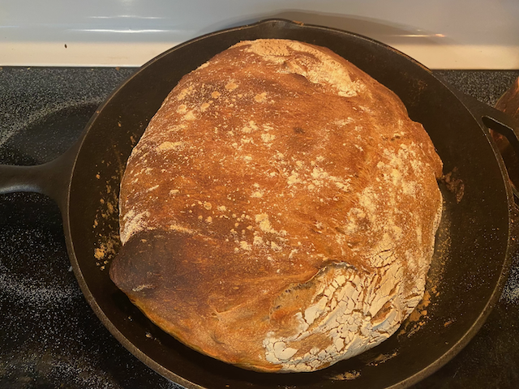

by Colton Hurst
2020-08-05
Recently, nearly all of my time has been spent on work, school, or church. I'm in the final week of my summer class at ODU, and once it's done, I plan on sleeping consistently again 😴
Outside of those "big three", I've been reading a lot (The Kingkiller Chronicle), have been slowly getting back into Rust programming, and have been learning how to make homemade bread.

This is my now page, which explains what I'm currently up to in life. If you have a website, you should make one too.